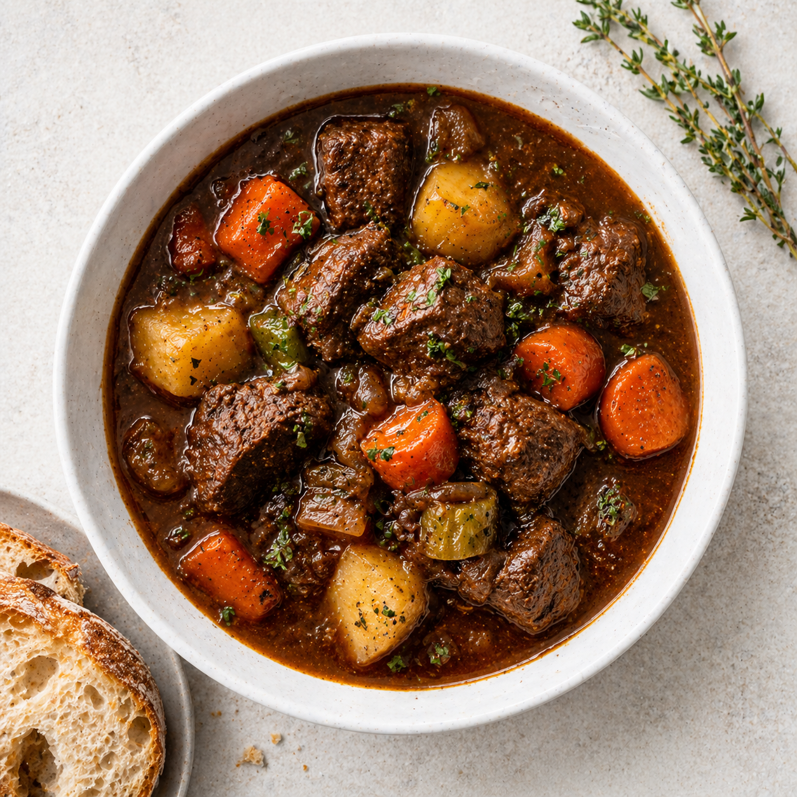

A hearty slow-cooked beef stew with root vegetables, deeply
flavoured and satisfying. Beef chuck is browned, then
simmered slowly with red wine, stock and herbs until tender,
with carrots, potatoes, parsnips and mushrooms added in
stages.

Prep time
Cooking time
Total time
Dietary
Not suitable for vegetarian, vegan, or gluten-free diets
Allergens
Gluten
Sulphites
Equipment
Large heavy-bottomed pot with lid, knife and cutting
board, paper towels, wooden spoon
Change the number to set the serving size and recalculate
the ingredients — currently
6 servings (original: 6).
Ingredients
1.2
kg beef chuck, cut
into 4 cm cubes
2
tbsp vegetable oil
1 large onion, diced
3 cloves garlic, minced
3
tbsp tomato paste
2
tbsp plain flour
250
ml red wine
700
ml beef stock
2 bay leaves
1
tsp dried thyme
3 large carrots, cut into
chunks
3 medium potatoes, peeled and
quartered
2 parsnips, cut into chunks
200
g mushrooms, halved
Salt and black pepper to taste
Steps
Tick off each step as you complete it to keep track of
your progress. Reloading the page clears all ticks.
 Gluten
Gluten